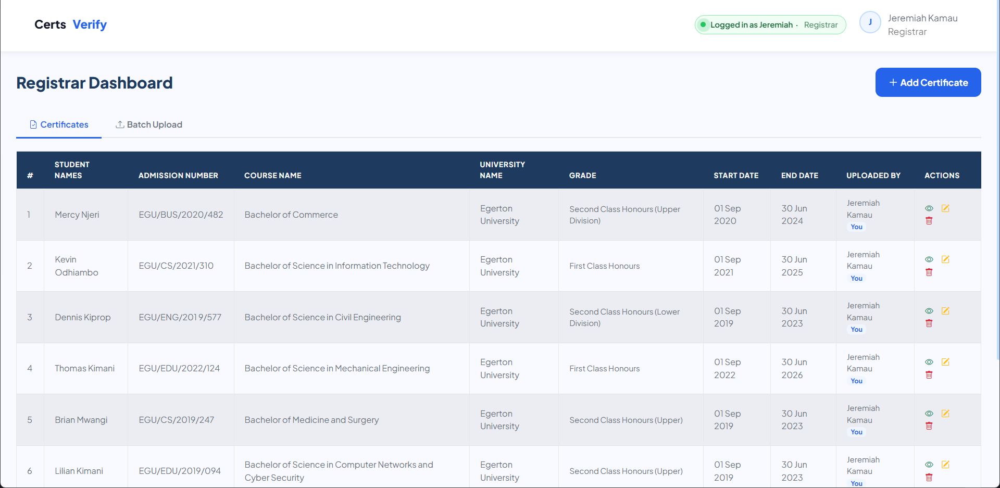
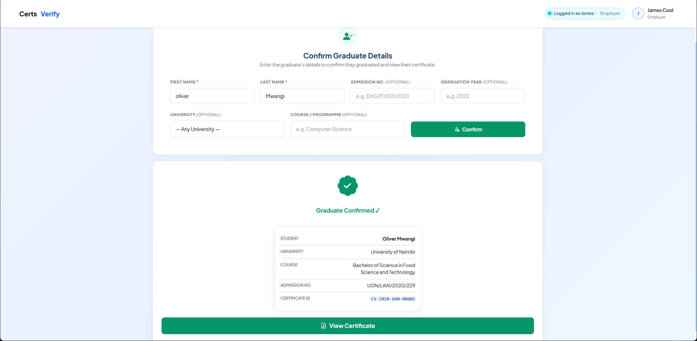

CertsVerify
Web Platform
A certificate verification platform for universities, graduates and employers. Registrars issue certificates, graduates share them, and employers confirm in seconds that a certificate is genuine — by Certificate ID, QR code, or by uploading a scanned PDF that the system reads with OCR.
The hard part: building an OCR pipeline (Ghostscript + Tesseract) that reliably extracts structured data from inconsistent certificate layouts using anchor-phrase parsing — not just dumping raw text. Read how it happened ↓
- Four roles — Graduate, Employer, Registrar, SysAdmin — each with its own dashboard
- OCR batch upload reads name, admission number, course and grade off scanned PDFs
- Admin dashboard with live stats, search and pagination; 2FA and password-strength rules
- Seeded with 50 sample certificates across 10 Kenyan universities (IDs like
CV-2025-UON-00012)


Scoreline
4
User Roles
2FA
Admin Security
OCR
Batch Upload
Lineup
PHPMySQLBootstrap 5
Tesseract OCRGhostscriptPHPMailer